Jurnal Eropa · Hari 2 dari 16
Rute terpanjang dari seluruh road trip ini: lebih dari 300 km, sekitar lima jam di jalan. Tapi sebelum berangkat kami sempat jadi warga lokal sebentar, dan di tengah jalan kami berhenti di kota yang tidak ada di rencana awal.
Laim, München
Sarapan di hotel harus bayar tambahan €12,50 per orang. Kami ambil, karena hari ini bakal lama di jalan dan makan pagi yang layak itu investasi. Setelah itu, daripada langsung naik mobil, kami jalan kaki dulu keliling kawasan sekitar penginapan — bukan buat mengejar objek wisata, tapi buat merasakan jadi warga lokal sebentar.
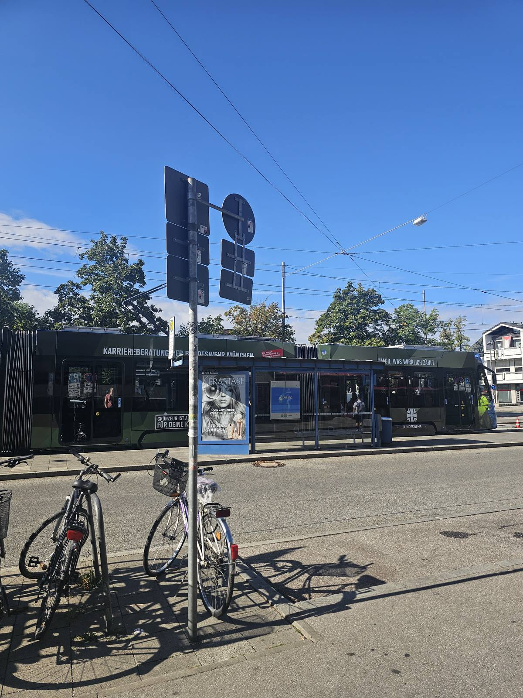
Yang menarik justru hal-hal kecil: toko buah di pinggir jalan yang menata bluberi, stroberi, dan ceri di kotak-kotak kayu; orang menunggu lampu penyeberangan tanpa ada yang nyelonong; gedung kantor kaca yang berdiri santai di antara rumah-rumah biasa. Ini bagian perjalanan yang tidak masuk daftar tempat wisata, tapi paling terasa "hidup di sini"-nya.
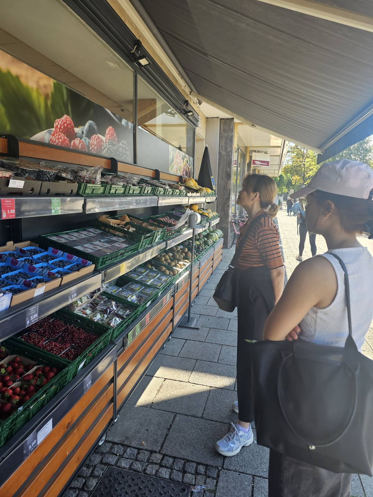
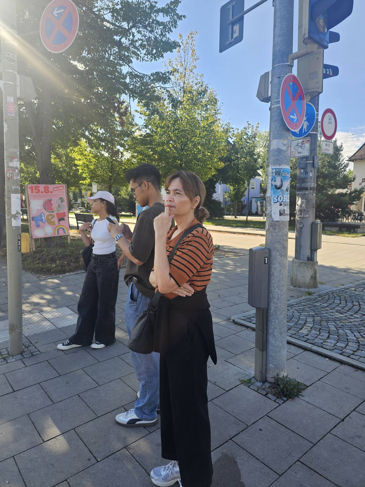
Harga buah di sini terasa masuk akal — dan kualitasnya jauh lebih baik dari dugaan.
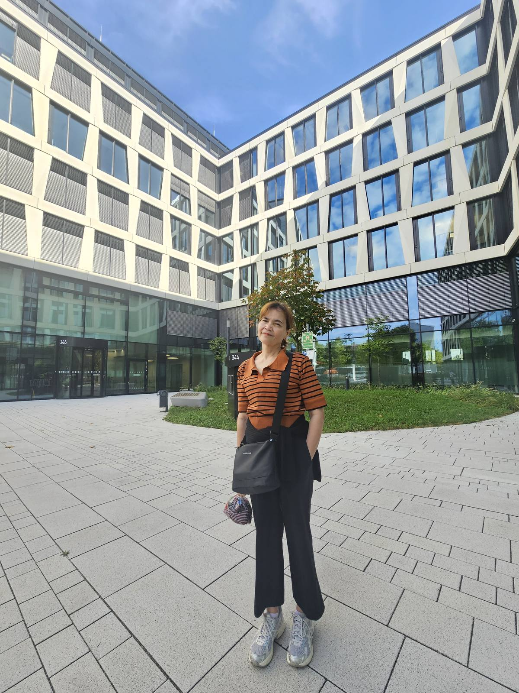
Kira-kira sepertiga perjalanan
Lima jam nonstop di mobil itu melelahkan, apalagi untuk rombongan yang baru mendarat kemarin. Jadi kami berunding berempat dan sepakat: perjalanan dipecah, berhenti dulu di Regensburg. Kota tua di tepi Sungai Donau ini kebetulan ada di jalur menuju Praha, jadi tidak memutar sama sekali.
Tujuan kami satu: Haidplatz, alun-alun tua di jantung kota. Dari situ tinggal jalan kaki ke mana-mana — jalanan batu, rumah-rumah warna pastel, dan jendela-jendela penuh bunga petunia yang bikin siapa pun berhenti buat foto.
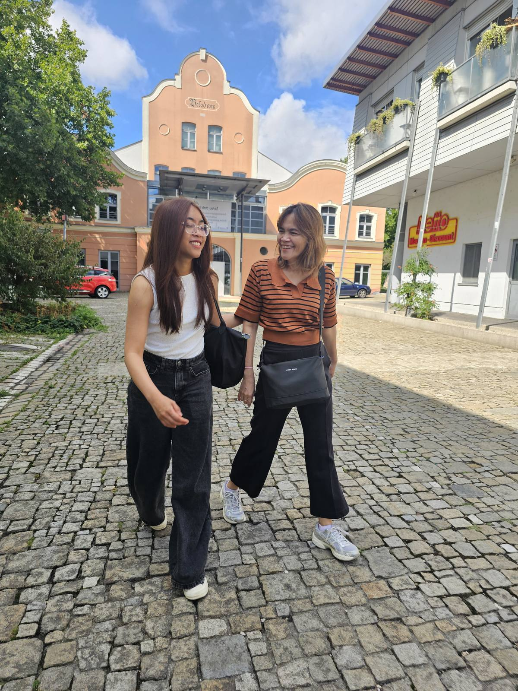
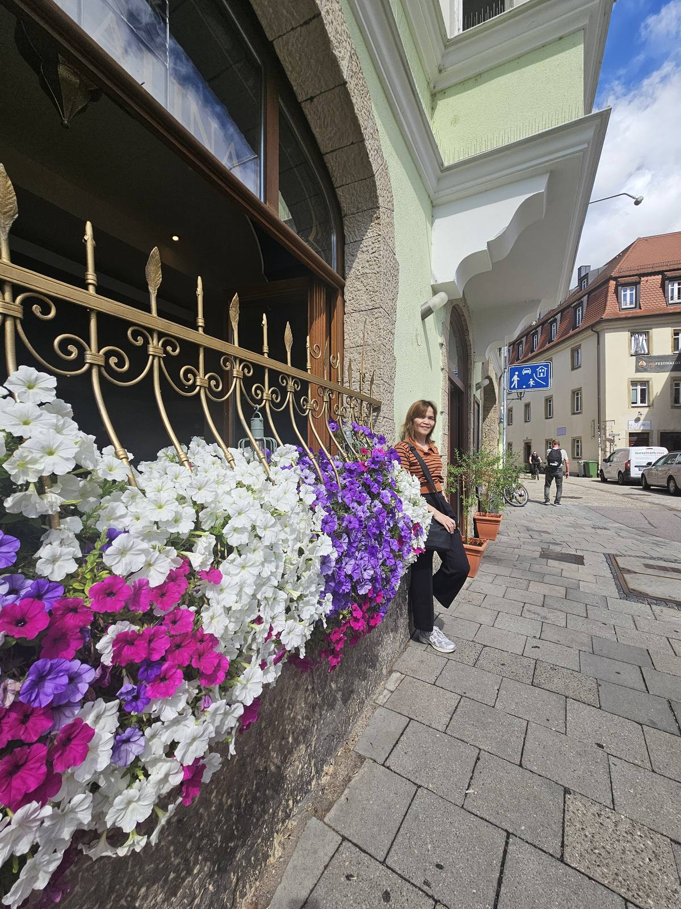
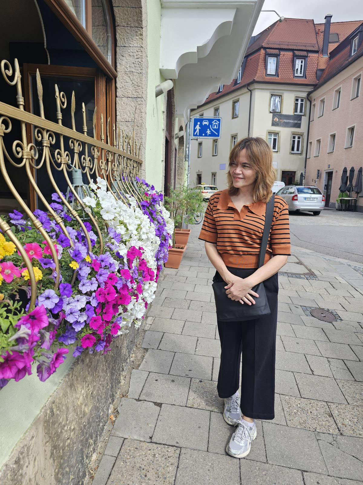
Nyaris tiap jendela di sini punya kotak bunga. Kalau suka foto, sisakan waktu ekstra.
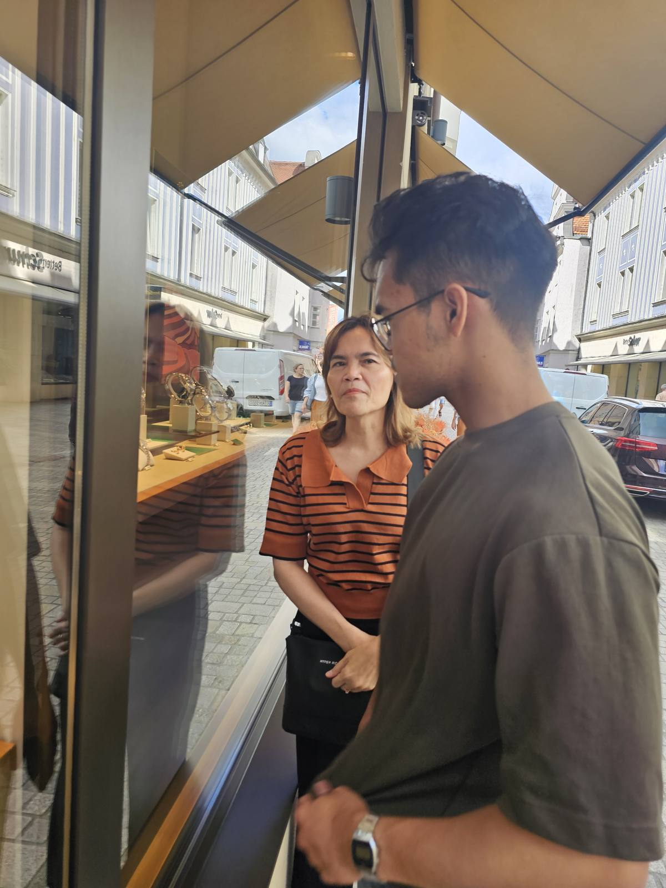
Dan lagi-lagi soal porsi
Untuk makan siang kami tidak cari restoran, cukup kebab. Harganya sekitar €9 — dan lagi-lagi pelajaran yang sama: porsinya besar. Untuk berempat, kami beli dua saja dan itu sudah cukup, tinggal ditambah kentang goreng.
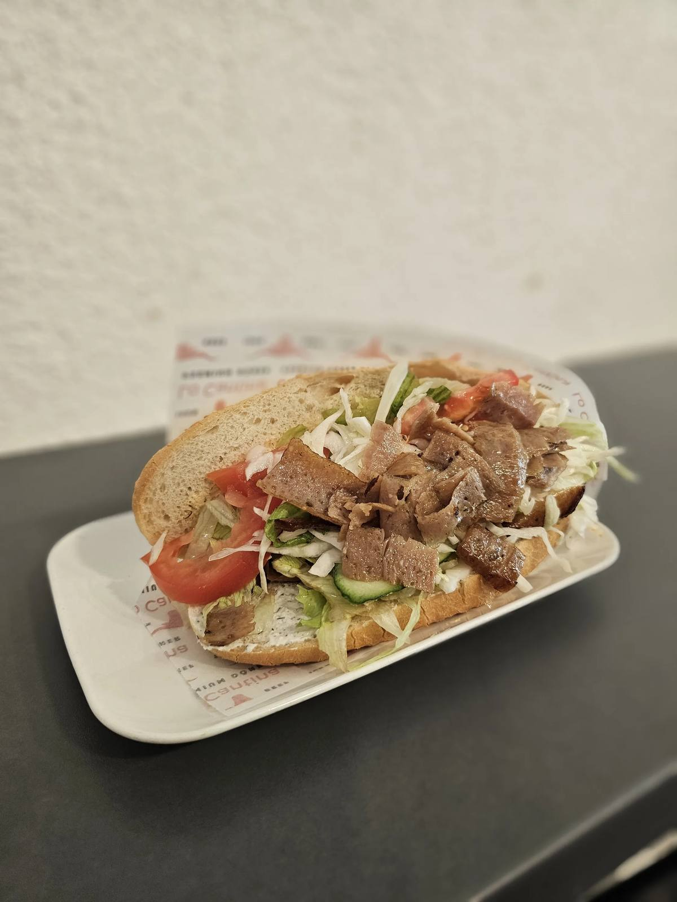
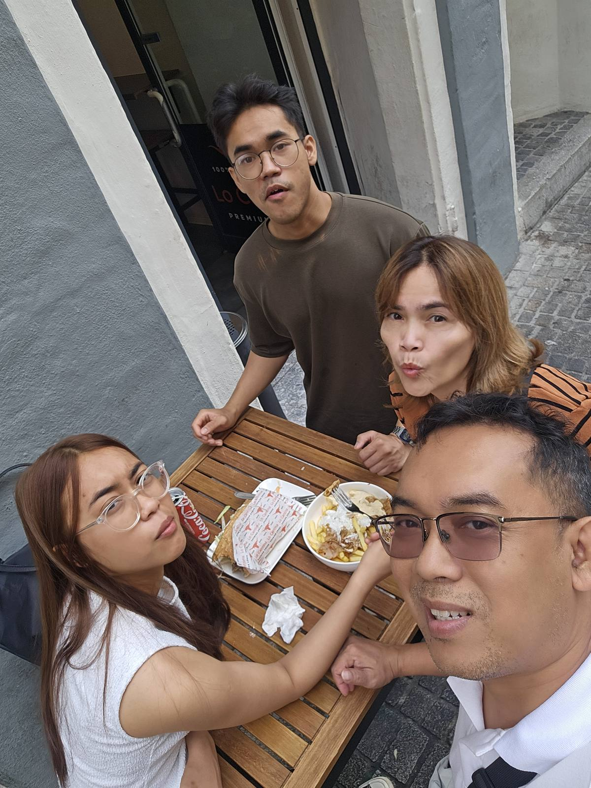
Buat yang menghitung anggaran: makan siang berempat di sini total sekitar €18 — jauh di bawah makan malam restoran, dan rasanya tetap enak. Strategi kami sepanjang road trip ini memang begitu; satu kali makan "serius" per hari, sisanya jalanan.
Wajib, bukan opsional
Sebelum lanjut, satu ritual yang tidak boleh dilewat: gelato. Di kota tua Jerman selatan, kedai es krim Italia ada di hampir setiap sudut, dan rasanya benar-benar bagus. Antre sebentar, pilih dua scoop, makan sambil jalan balik ke mobil.
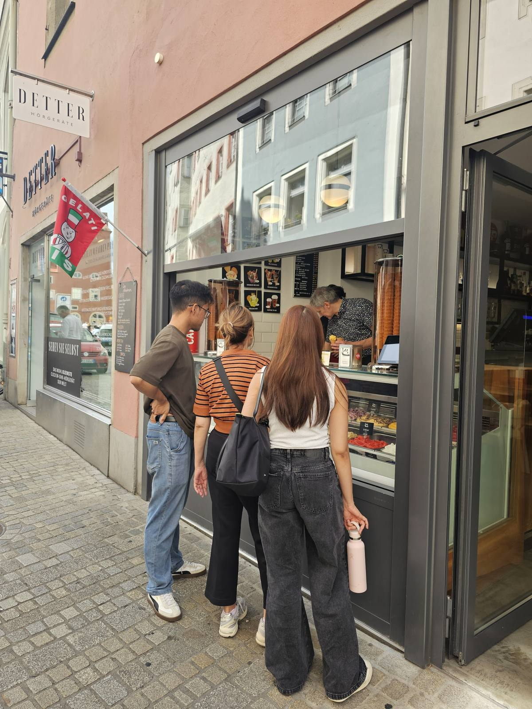
Setelah itu baru cus ke Praha. Mobil kembali masuk jalan tol, arah timur laut, menuju perbatasan Ceko — dan malam ini kami tidur di kota yang sama sekali beda bahasanya.
Regensburg → Praha, lewat tol
Dari Regensburg kami masuk tol lagi. Buat orang Indonesia, hal pertama yang harus dibiasakan: setir ada di sebelah kiri dan mobil jalan di lajur kanan. Butuh beberapa jam sampai refleksnya benar-benar berpindah.
Yang kedua, dan ini lebih penting: perhatikan rambu kecepatan, selalu. Di dalam kota umumnya 30–50 km/jam. Di tol 80 ke atas — dan di ruas tertentu di Jerman memang tidak ada batas kecepatan, jadi bisa gas pol tanpa takut ditilang. Tapi bebas bukan berarti aman: tetap jaga jarak, dan ingat mobil di belakang bisa datang jauh lebih cepat dari perkiraan.
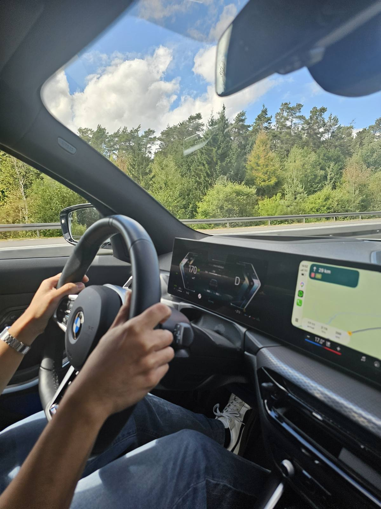
Wajib dicek per negara
Hari ini kami menyeberang dari Jerman ke Ceko, dan di sinilah satu hal yang sering dilupakan pendatang jadi penting: vignette. Ini bukan tol yang dibayar per gerbang, tapi izin pakai jalan tol yang dibeli di muka untuk jangka waktu tertentu — ada yang harian, sepuluh harian, bulanan, sampai tahunan.
Aturannya berbeda-beda tiap negara, dan itu bagian yang paling membingungkan. Jerman tidak mewajibkan vignette untuk mobil penumpang, sementara Ceko dan Austria mewajibkan. Di Ceko sistemnya sudah sepenuhnya digital: tidak ada stiker yang ditempel di kaca, melainkan terikat pada nomor pelat dan diawasi kamera otomatis. Vignette satu negara juga tidak berlaku di negara lain.
Yang bikin ini krusial buat penyewa mobil: mobil sewaan belum tentu sudah dibekali vignette untuk negara yang akan dilewati. Tanyakan ke petugas rental saat mengambil mobil, lalu cek sendiri sebelum menyeberang perbatasan. Dendanya bisa sampai puluhan ribu koruna — jauh lebih mahal daripada harga vignette-nya sendiri.
Ceko · hari masih panjang
Kami sampai Praha lewat jam 5 sore. Di Indonesia jam segitu matahari sudah condong mau pulang; di sini, karena musim panas, langit masih terang benderang seperti tengah hari. Ini salah satu keuntungan besar jalan-jalan ke Eropa di bulan Agustus: hari terasa dua kali lebih panjang.
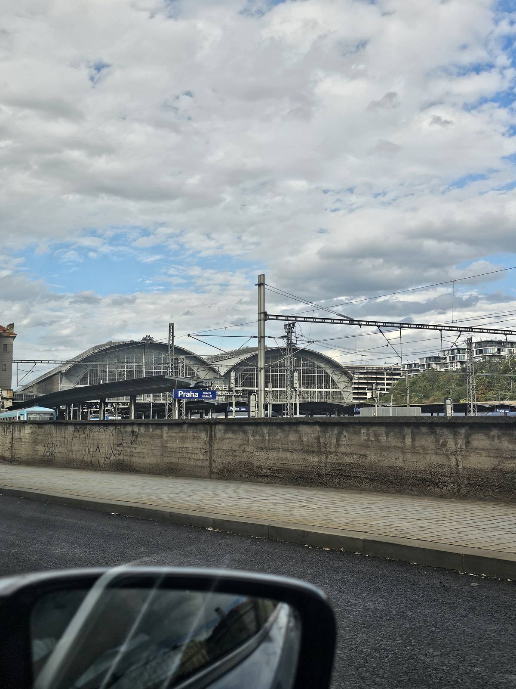
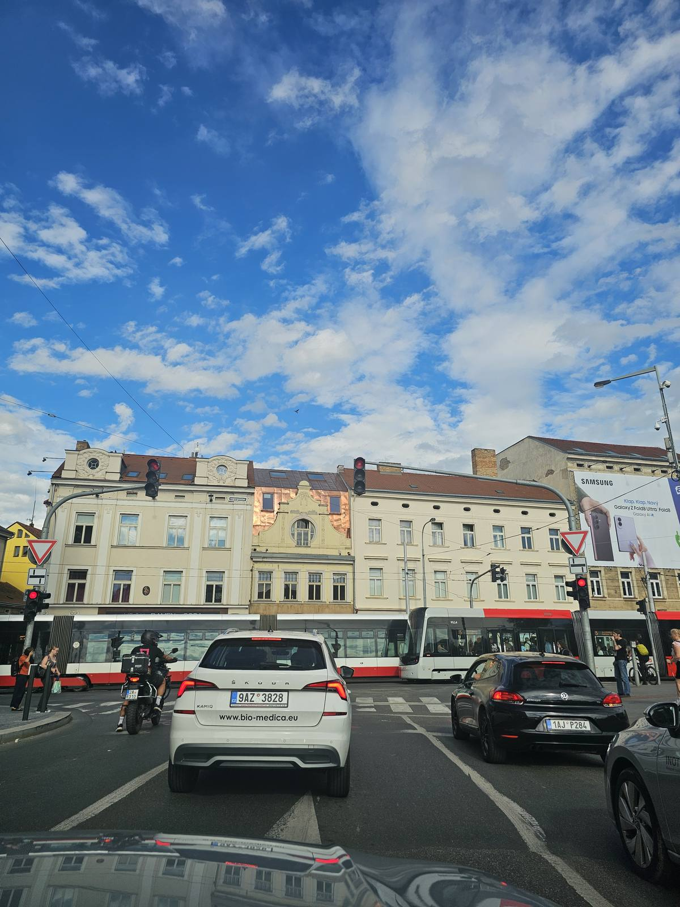
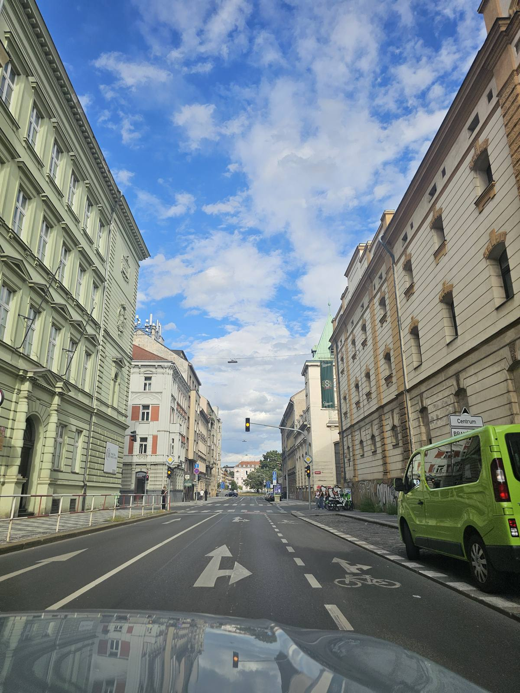
Tram di mana-mana, bus listrik ungu, gedung-gedung tinggi berhias. Praha langsung terasa beda dari München.
Dua malam · ada dapur
Untuk Praha kami tidak ambil hotel, tapi apartemen di kawasan Žižkov, dua malam, sekitar Rp3,6 juta total. Tempatnya bagus dan cukup lengkap — yang paling penting: ada dapur beserta alat masaknya.
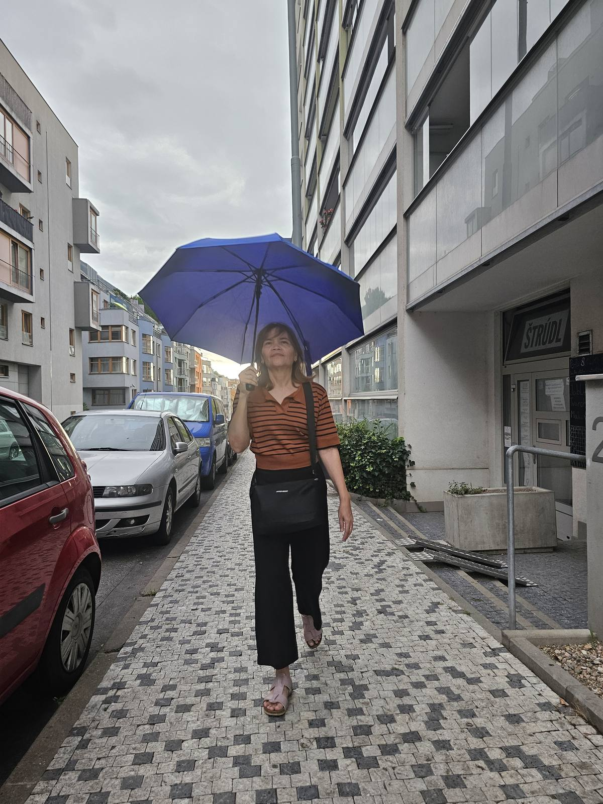
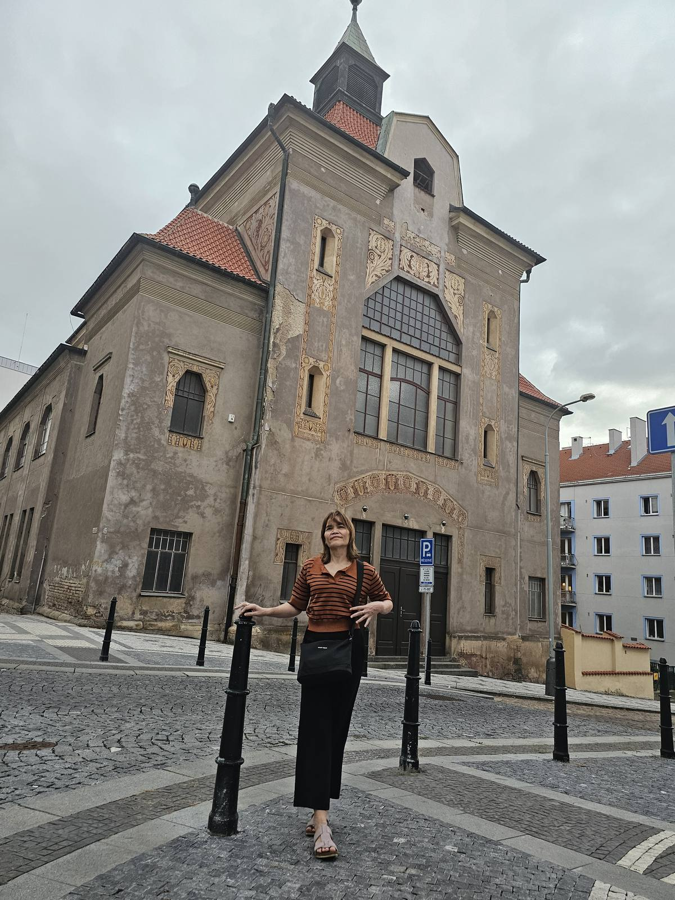
Sempat gerimis sebentar. Payung lipat di tas itu wajib, cuaca Eropa bisa berubah dalam sepuluh menit.
Belanja di Billa
Melihat dapurnya lengkap, Justin punya usul: daripada cari restoran lagi, masak sendiri saja. Semua setuju. Jadi sebelum pulang ke apartemen kami mampir ke Billa — supermarket yang ada di mana-mana di Ceko — dan belanja bahan.
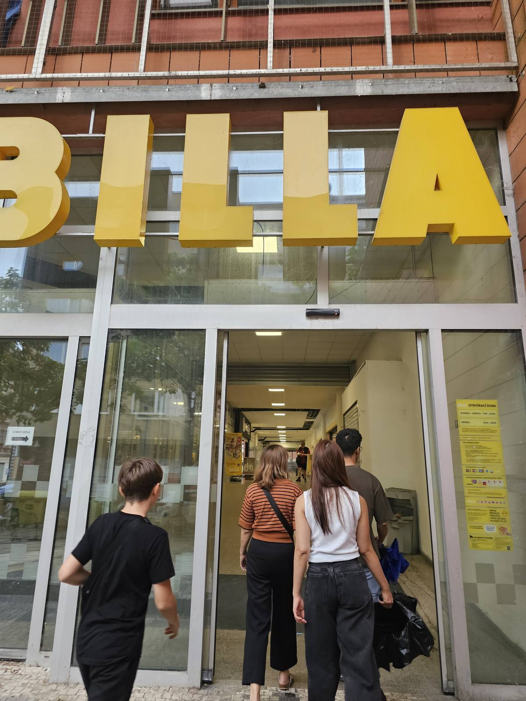
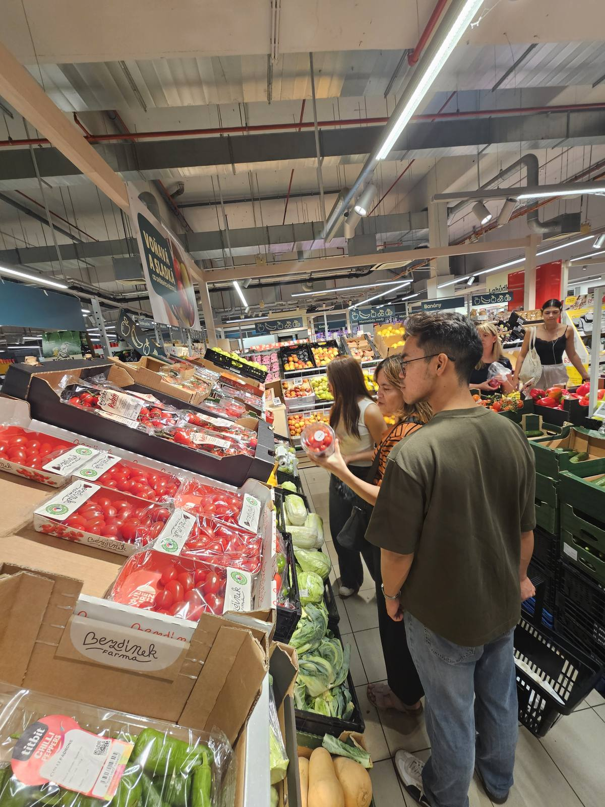
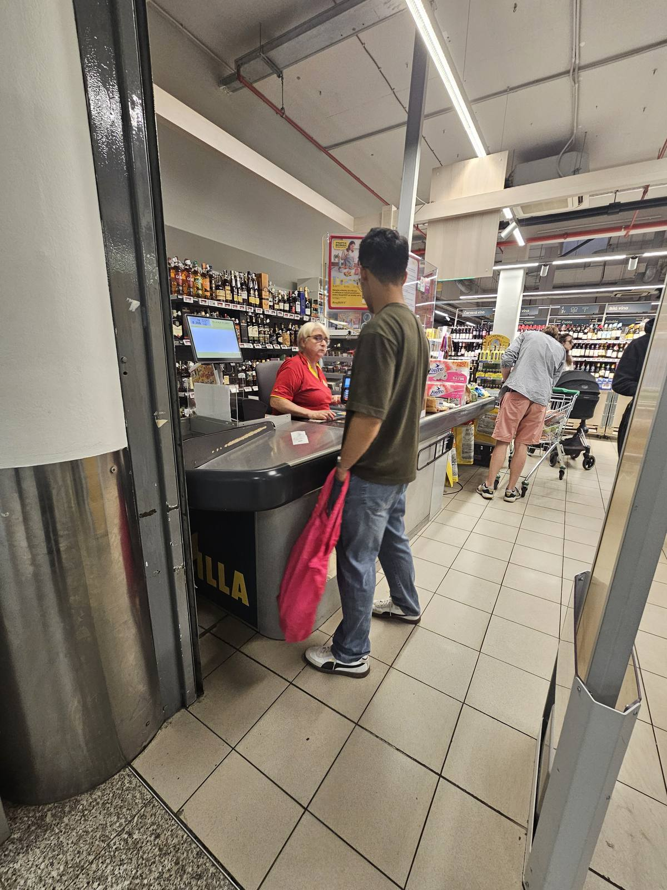
Kenyang pol
Menunya: pasta ala Justin. Total belanja bahan cuma sekitar €12 untuk berempat — bandingkan dengan €80 untuk sekali makan malam di restoran. Dan bukan cuma cukup: kami kenyang pol, malah masih sisa telur untuk sarapan besok pagi.
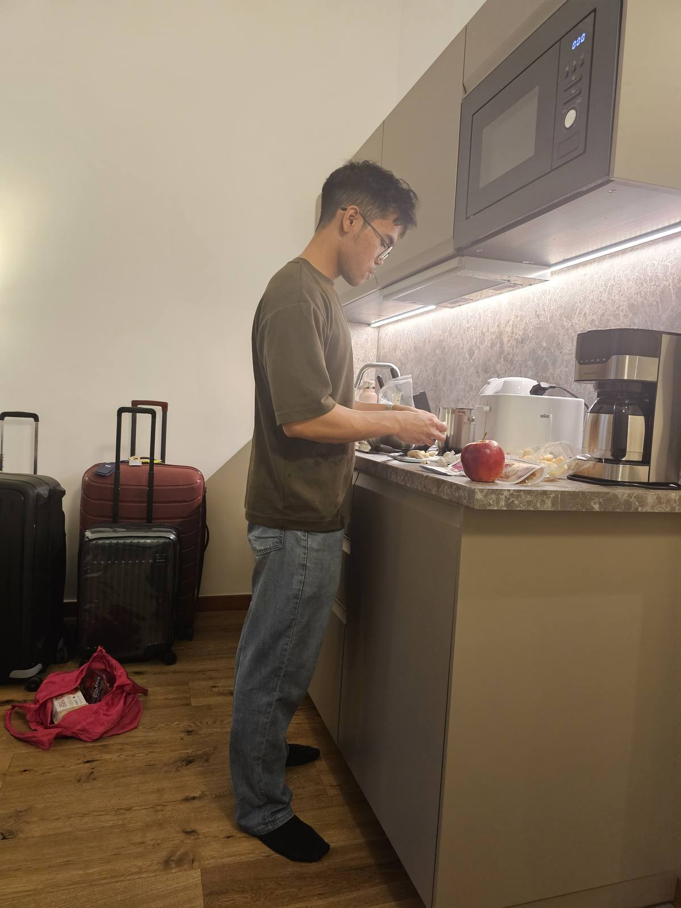
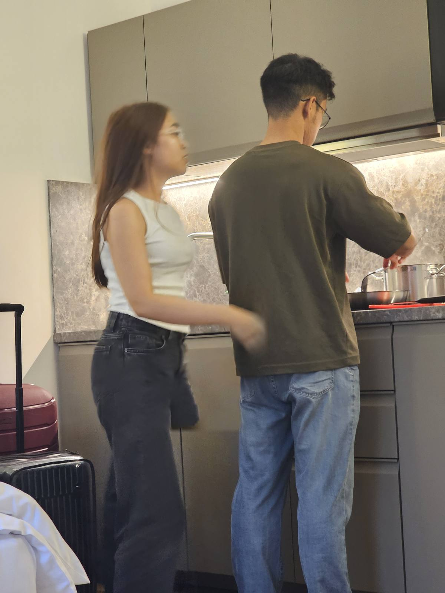
Makannya pun tidak formal: duduk lesehan di lantai kamar, piring di tangan, ngobrol sambil ketawa-ketawa. Jujur saja, ini salah satu momen paling menyenangkan sepanjang hari — lebih hangat daripada restoran mana pun.
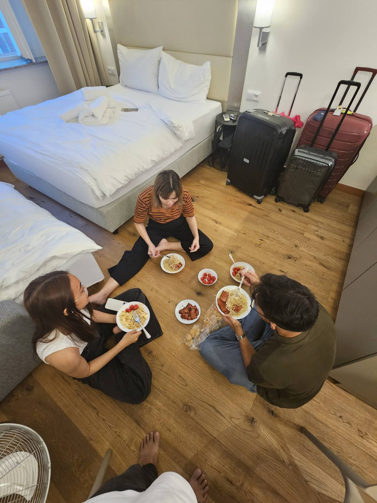
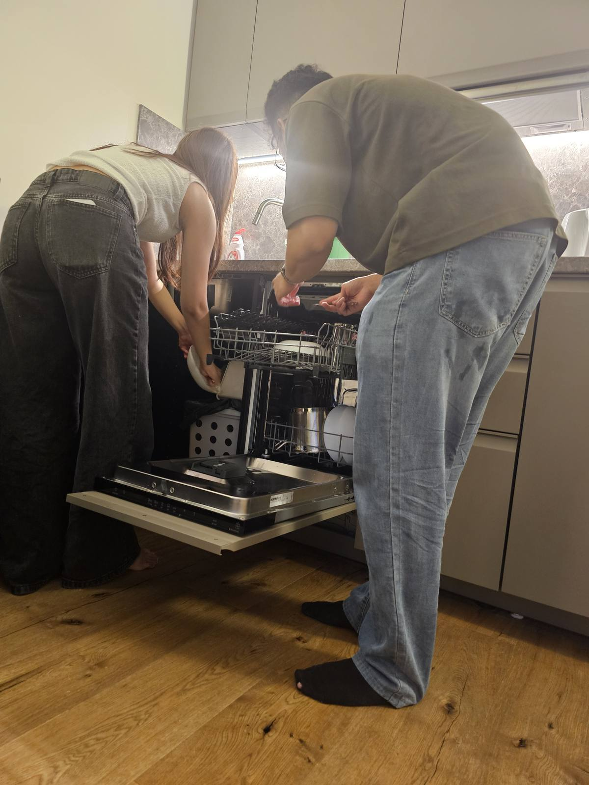
Selesai. Perjalanan terpanjang road trip ini ditutup dengan perut kenyang dan biaya makan malam yang tidak sampai seperlima anggaran kemarin. Besok, giliran Praha dijelajahi dengan kaki. Met istirahat.